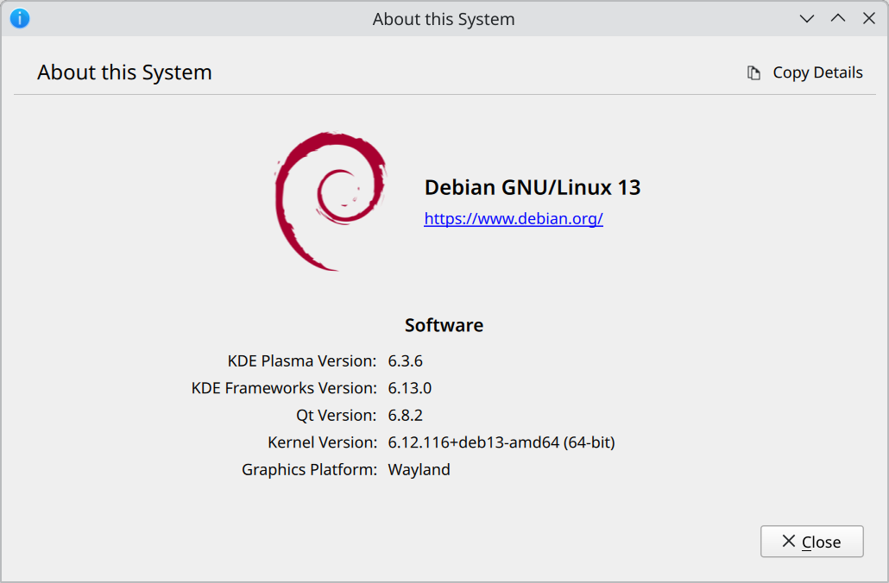

Brightness and sound
Adjust the display, keyboard lighting and volume with touch sliders and KDE feedback.
A custom Touch Bar for KDE Plasma on T1 MacBooks. Tested on MacBookPro14,2 with Debian 13, Plasma 6.3.6 and Linux 6.12.116.


Adjust the display, keyboard lighting and volume with touch sliders and KDE feedback.
Control playback, mute the microphone, open a terminal or switch to the Fn layer.
Check CPU temperature and load. Add your own web shortcuts and a local status command.


Start with a working T1Bridge installation. The guide documents the Debian 13 kernel compatibility work, the renderer build and the KDE user service.
Read the setup guide